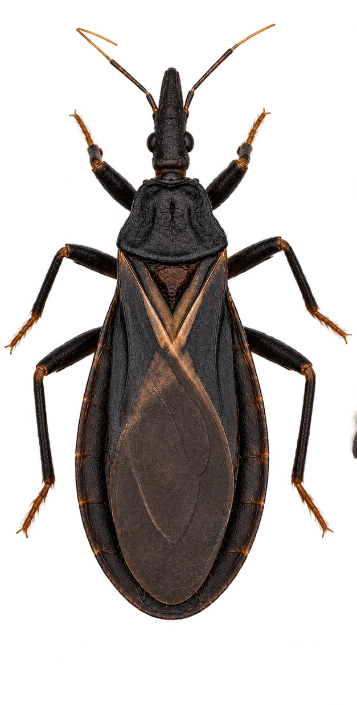
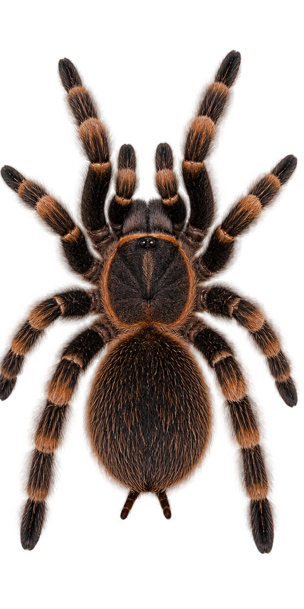

Research line
Triatominae
Evolution, systematics and phylogenomics of Chagas disease vectors.
Learn more →Researcher working on evolution, systematics and genomics of Neotropical organisms, with emphasis on Triatominae and Theraphosidae.

I am a Visiting Professor at the Federal Institute of Santa Catarina (IFSC), Câmpus Lages, where I work across Biotechnology, Biology, and Chemical Engineering. My research lies at the intersection of evolutionary biology, systematics, genomics, phylogenomics, and bioinformatics, with particular emphasis on Triatominae—vectors of Chagas disease—and Neotropical Theraphosidae (tarantulas).
My work combines field biology, systematics, phylogenetic inference, and high-throughput sequencing to investigate diversification, adaptation, and biogeographic history. I combine integrative taxonomy, morphological analyses, geometric morphometrics, molecular and genomic data, phylogenomics, and computational approaches to investigate species boundaries, evolutionary relationships, diversification, and genomic variation.
An experimental academic tool for exploring Bioinformatics, Omics and Evolution through a specialized conversational interface.
Developed to support students, educators and researchers, BioInfo Chat provides structured assistance with scientific concepts, analytical workflows, computational methods and journal-selection questions while emphasizing critical use and validation against the scientific literature.
Two core biological systems connect my work in biodiversity, evolution, systematics and comparative genomics.

Evolution, systematics and phylogenomics of Chagas disease vectors.
Learn more →
Phylogenomics, biogeography and diversification of Neotropical tarantulas.
Learn more →Reproducible computational workflows are a central part of my research, collaboration and teaching.
Workflows, scripts and training resources for UCEs, phylogenomics, transcriptomics and genomic analyses.
See repositories →Research identifiers, publications and professional profiles.